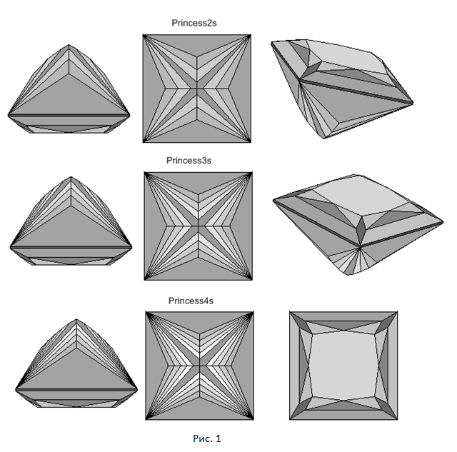
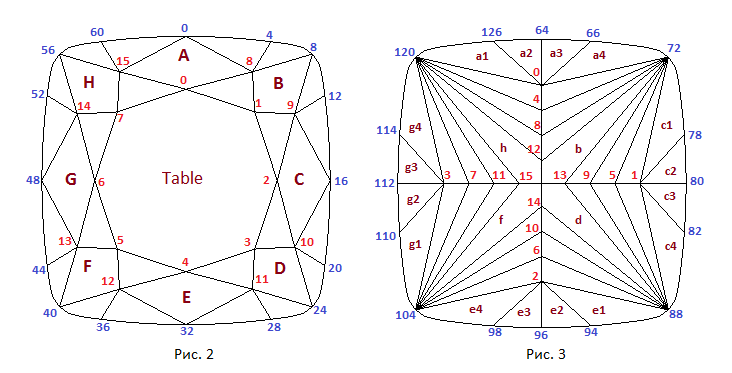
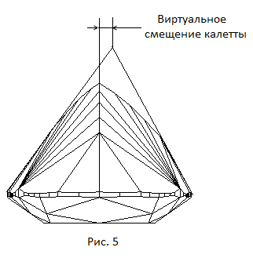
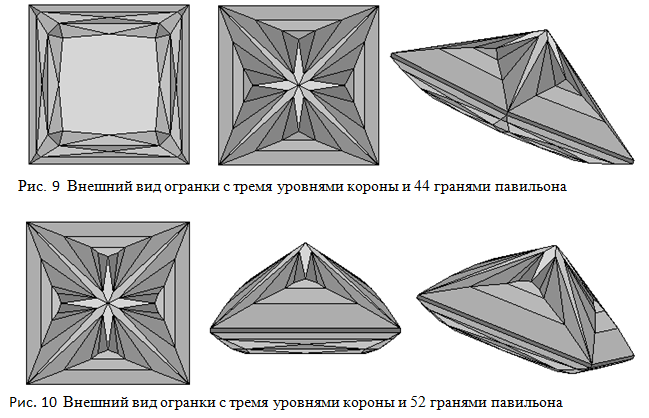

В данном разделе мы создадим модель огранки, которую назовем принцессой с тремя шевронами на подушке. Кто такая принцесса с шевронами и почему она на подушке? Одним из распространенных типов огранок является принцесса. Эта форма огранки была разработана в 1960-е годы, а примерно в 1980-81 гг. получила название Принцесса. Эта новая форма в мире бриллиантов выглядит современно. Считается, что она была названа Принцесса потому, что такой камень сегодня достоин украшать представителей королевских фамилий. Огранки принцесса строятся на основе рундиста имеющего форму квадрата или прямоугольника. Внешний вид трех огранок принцесса, различающихся формой павильона, показан на рисунке 1.
Как можно увидеть из online-программы павильон имеет четыре основных грани расположенные по диагоналям огранки. Они начинаются у угловых вершин рундиста и сходятся в калетте огранки. На павильоне огранки – вдоль каждой из четырех сторон рундиста – расположен ярус из четырех граней. Между этими гранями и основными угловыми гранями павильона (они простираются от рундиста до калетты) расположены еще три яруса граней, называемых шевронами (chevron). В верхней части рис.1 показана огранка принцесса с двумя ярусами таких граней – принцесса с двумя шевронами – Princess2s. В средней части рисунка показана огранка принцесса с тремя ярусами шевронов - Princess3s, а в нижней части – огранка с четырьмя ярусами шевронов – Princess4s. Короны на всех трех показанных на рисунке 1 огранок имеет один и тот же прямоугольный вид. В online-программе корона построена как у огранок типа cushion.
Обычно огранки типа принцесса строятся на основе квадратного или прямоугольного рундиста. Огранки принцесса, которые показаны на рисунке 1 можно назвать классическими огранками этого типа. Однако можно использовать для этих огранок форму рундиста отличную от прямоугольной. Наилучшим образом для этой цели подходит рундист от огранок подушка, чью форму можно менять от весьма округлой до почти прямоугольной. В данной главе будет рассмотрено создание огранки типа принцесса с тремя шевронами и с рундистом подушка. Будем называть эту огранку как Princess3s_on_Cushion или иногда для сокращения просто Princess.
По ссылке Princess3s_on_Cushion Cube Map можно увидеть эту огранку отображенную при помощи кубических карт. Нажав на приведенной по ссылке странице кнопку Inverse можно увидеть огранку на черном фоне.

var lw = 1.0; // Отношение длины огранки к ширине
// Рундист
var r = 0.05; // Толщина рундиста
var del_gd = 0.02;
var rounnd_cir1 = 0.054; // "Roundness front"
var rounnd_cir2 = 0.054; // "Roundness flank"
var R3 = 0.11; // "Radius corner"
var crown_ang_gd = 35.0*DEGREE; // то же что и ang_2 и ang_3
var pav_ang_gd = 63.0*DEGREE; // то же что и ang_2 и ang_3
var ang_corner = 45.0*DEGREE; // "Corner angle girdle"
var gd_segments = 0.29; // // Основной параметр задающий размеры сегментов
// Корона
var beta = 32*DEGREE; // Угол короны
var t = 0.60; // Размер площадки
var starFacets = 0.5; // Задает положение средних вершин короны
// Павильон
var hp = 0.57;
var pavilionAngle = 56*DEGREE; // Задает угол наклона граней павильона примыкающей к рундисту
// Более точное определение - угол наклона ребра
// соединяющего вершину 64 рундиста с вершиной 0 павильона
var virtCuletOffsetX = 0.00001*DEGREE; // Смещение виртуальной калетты по оси OX
var virtCuletOffsetY = 0.00001*DEGREE; // Смещение виртуальной калетты по оси OY
var pavilionFirstLevel = 0.65; // Отношение размера большой грани
// к максимально-возможному ( >= 0, <= 1 )
var pavilionLastLevel = 0.35; // Отношение размера основной грани
// к максимально-возможному ( >= 0, <= 1 )
var kf_bulge_s2 = 0.5 // Задает выпуклость грани S2 с выпуклой стороны
var kf_bulge_s3 = 0.1; // Задает выпуклость грани S3 с выпуклой стороны
var kf_flat_s2 = 0.50; // Задает выпуклость грани S2 с плоской стороны
var kf_flat_s3 = 0.01; // Задает выпуклость грани S2 с плоской стороны
Для огранок принцесса построенных на основе рундиста подушка можно было бы для короны и павильона выбрать такую же форму,
что используется в прямоугольных огранках этого типа изображенных на рисунке 1.
Однако, так как рундист подушки всегда обладает в большей или меньшей мере округленностью,
то для того, чтобы сделать рундист достаточно равномерным по толщине,
предпочтительно разбить большие грани короны и павильона примыкающие к рундисту
на несколько более мелких граней. Более того, для короны можно выбрать такой же вид (и построение) как у огранки Maltese.
Такой внешний вид короны, по моему мнению, выглядит лучше, чем вид короны огранок показанных на рисунке 1
(по крайней мере применительно к рундисту типа подушка).
Особенностью огранки Princess3s_on_Cushion, как хорошо видно из рисунка 4, является то, что узловые вершины рундиста
(те вершины, к которым подходят ребра короны и павильона) со стороны короны и павильона не полностью совпадают.
Это дает возможность делать форму огранки более варьируемой.
Разбиение рундиста на сегменты со стороны короны и со стороны павильона осуществляется независимо друг от друга.
Такое разбиение рундиста на сегменты похоже на то как оно осуществлялось в огранке Octagram.
Но в обоих случаях размеры сегментов как для короны так и для павильона определяются по способу,
примененному в огранке Maltese.
Если предположить, что огранка будет в основном использоваться при небольших удлинениях (параметр lw равен или близок к 1.0),
то размер сегментов рундиста (рис.4) передней части (вершины 0-4 и 4-8)
и боковой части (вершины 8-12 и 12-16) рундиста со стороны короны можно регулируровать одновременно
одним и тем же параметром crown_ang_gd. То же самое относится к передним (вершины 64-66 и 66-72)
и боковым (вершины 72-78 и 78-80) сегментам рундиста со стороны павильона, размеры которых изменяются
одновременно параметром pav_ang_gd (рис.4). Каждый из этих двух параметров заменяет собой
пару параметров ang_2 и ang_3,
которые использовались при построении рундиста Maltese.
На тот случай, что если все же предполагается в некоторых пределах изменять
величину удлинения огранки, вводится параметр ang_corner, который позволяет изменять (рис. 4)
положение вершины рундиста 8 (и 72)
для возможности исправления формы угловой грани B короны, которая теряет свою осевую симметрию
при значении парметра lw отличном от 1.0.
Расчет положения вершин короны происходит также как и в огранке Maltese. Для сокращения программы не введены вычисляемые параметры задающие высоту короны hCrown и hCrown2.
Как можно увидеть из online-программы павильон огранки имеет четыре основных грани расположенные по диагоналям огранки. Они начинаются у угловых вершин рундиста и сходятся в калетте огранки. На павильоне огранки – вдоль каждой из четырех сторон рундиста – расположен ярус из четырех граней. Между этими гранями и основными угловыми гранями павильона (они простираются от рундиста до калетты) расположены еще три яруса граней, называемых шевронами (chevron).
При запуске online-программы принцесса имеет симметричную форму павильона относительно взаимно перпендикулярных вертикальных плоскостей проходящих через центр огранки. В некоторых случах для сохранения массы заготовок, из которых создается огранка, приходится отказаться от полной симметрии павильона. Отдельные модели огранок, которые мы создали в предыдущих главах, предусматривали возможность изменения положения калетты в горизонтальной плоскости. Такое смещение калетты дает возможность в некоторой степени согласовать форму павильона с формой заготовки для огранки. При отклонении калетты от центральной оси симетрии огранки грани павильона, имевшие одинаковый наклон к горизонтальной плоскости, теряют это свойство и павильон становится несимметричным. Заметим, что огранка может потерять часть своей стоимости, по причине того, что если не находится в центре павильона (не лежит на оси симметрии огранки).
Поэтому иногда, для того, чтобы существенно не уменьшать массу заготовки для огранки, используется еще один способ ее построения – положение калетты остается неизменным, но соответствующим образом изменяются углы наклона всех (или только некотрых) граней павильона. На рисунке 5 для создания несимметрии у павльона смещена вправо не сама калетта, а точка, которую можно рассматривать как виртуальную калетту огранки. Обычно величину этого смещения задают в угловых единицах измерения относительно углов наклона граней павильона расположенных вдоль сторон рундиста при отсутствии смещения. Само смещение обычно называют виртуальным смещением калетты.
На рис.6 показан прямоугольник OACB в который вписана 1/4 часть проекции рундиста на горизонтальную плоскость OXY. Одновременно на рис.6 в его правой верхней части показано положение характерных точек используемых для построения шевронов павильона расположенных вдоль оси OX огранки. В левой нижней части рис.6 показано положение характерных точек используемых для построения шевронов павильона расположенных вдоль оси OY огранки.
Сначала проводится диагональ ОС прямоугольника, а затем строится отрезок DG перпендикулярный к этой диагонали и ограниченный
точками пересечения прямой, на которой он лежит, с осями OX и OY.
Затем проведем через точки D и G прямые составляющие
угол α с осями OX и OY. Угол α - это угол, который составляют грани павильона a, b, c
и d лежащие вдоль сторон рундиста с горизонтальной плоскостью OXY. Для задания этого угла в СДМ
предусмотрено поле pavilionAngle, значение которого можно изменять при помощи соответствующего параметра.
Заметим, что павильон строится таким образом, что при изменении удлинения огранки этот угол не изменяется,
что и отражено на рис.6. Прямые, проведенные через точки D и G под углом α к осям OX и OY,
пересекаются с этими осями в точках F и F′ соответственно.
На рис.6 показаны значения длин отрезков OF и OF′. Эти значения требуются для расчета значений w0 – w5,
исползуемых при построении павильона огранок принцесса (рис.7).
При конструировании павильона сначала находится уравнение плоскости pav, в которой лежит одной из четырех граней примыкающих к калетте. Ее азимут определяется удлинением огранки lw. Затем поочередно для каждого из четырех направлений осей OX и OY производится расчет положения вершин павильона лежащих на каждом из направлений. Для огранки с тремя шевронами (рис.7) это вершины S0, S1, S2, S3 и S4.
Рассмотрим, как происходит расчет этих вершин для огранки с тремя шевронами. Координаты точки w0 по осям OX и OY равны 0.
Координаты точки w5 равны 0.5, если расчет идет вдоль оси OY и lw • 0.5, если расчет идет вдоль оси OX.
Затем определяется значение величины wd. В зависимости от направления оно равно либо длине отрезка OD - при направлении вдоль OX,
либо длине отрезка OG - при направлении вдоль OY (рис.6). Для нахождения значения длины отрезка OG рассмотрим два прямоугольных
треугольника OAC и OCG. Для указанных треугольников можно записать следующее выражение
OB / OC = OC / OG или OG = OC • OC / OB
После подстановки в последнее выражение значений для OC и OB получим, что значение OG равно
OG = 0.5 + 0.5 • lw • lw
Из рассмотрения подобных треугольников OAC и ODC найдем длину OD
OD = 0.5/lw + 0.5 • lw
Исходя из значения wd рассчитывется величины wm,
а затем w5, w1 , w2, w3, w4 и z4 (глубина точки w4). На рисунке 8 приведены формулы по которым
производятся соответствующие вычисления.
pavilionFirstLevel задает неявно
положение точки w5, а, следовательно, косвенным образом и размер ломаной части павильона S0-S1-S2-S3-S4-S5.
Значение поля СДМ pavilionLastLevel неявно задает ширину четырехугольных граней павильона примыкающих к калетте огранки.
Глубину, на которой находится калетта, задает значение параметра hp, для которого также предусмотрено поле в СДМ.
Координата z точки S1 лежащей в случае, когда она принадлежит плоскости OXZ, проводится вертикальная прямая через точку с координатами (w1, 0, 0) и находится точка пересечения этой прямой с ранее найденной плоскостью pav. В том случае, если точка S1 принадлежит плоскости OYZ, проводится вертикальная прямая через точку с координатами (0, w1, 0) и находится точка пересечения этой прямой с той же плоскостью pav.
Предположим, что мы находим положение вершин павильона 13, 9 и 5, лежащих в плоскости OXZ в направлении возрастания значения координаты x. Этим вершинам на рис.7 соответствуют точки S2, S3 и S4. Проведем одну прямую через уже найденные точки S0 и S1, а другую – через S1 и S4. Найдем две точки пересечения, обозначенные на рис.7 как 0 и 1, с вертикальной прямой проходящей через точку w2. Положение точки S2 можно выбрать в любом месте отрезка ограниченного точками 0 и 1. Можно для нее выбрать, например, середину этого отрезка. Также, при желании более точно установить положение точки S2 в СДМ огранки можно ввести параметр задающий коэффициент деления отрезка 0-1 на две равные или неравные части. Положение точки S3 определяется точно так же как и положение точки S2. Через точки S1 и S2 проводится одна прямая, а через точки S2 и S4 - другая. Затем проводится вертикальная прямая через точку w3 и нахдятся точки пересечения этой прямой с прямыми S1-S2 и S2-S4. Обозначим эти точки пересечения как 2 и 3. Положение точки S3, совпадающее с положением вершины огранки 9, можно выбрать внутри отрезка 2-3 точно таким же образом, как было выбрано положение точки S2.
Для регулировки положение точек S2 и S3 в СДМ введены две пары полей (kf_bulge_s2, kf_flat_s2) и (kf_bulge_s3, kf_flat_s3). Введение этой возможности становится особенно актуальной, когда значение параметров, задающих смещение виртуальной калетты virtCultOffsetX и virtCultOffsetY, отлично от 0. В этом случае одна или две стороны павильона огранки могут фактически превратиться в плоскость, а две другие стороны могут сильно отличаться от той формы, которая получается, особенно, когда выбор точки S2 жестко определен при помощи константы заданной внутри программы.
Очевидно, что для огранки Princess3s число вершин, для которых можно ввести параметры регулировки их глубины равно 8. Можно ограничиться половинным набором этих параметров. При таком подходе регулировка глубины вершин лежащих на одном ярусе павильона будет меняться одновременно одним параметром, если для сторон павильона на котором расположены эти вершины значение смещения виртуальной калетты имеет один знак. Например один параметр будет изменять высоту вершин на тех сторонах павильона, для которых значение параметра задающего смещение калетты отрицательно, а другой – для которых смещение калетты положительно. В первом случае сторона павильона становится более плоской (flat), а во втором – более выпуклой (bulge). В программе создания огранки Princess3s продемонстрирован именно такой подход к построению павильона.
// Конструируем павильон
var z0 = - r/2 - hp;
var vec_lw = new Vector3D(-lw, 1.0, 0);
vec_lw.Normer();
var pav = new Plane3D();
pav.CreatePlaneVectorTwoPoints(vec_lw, girdle[8+64], new Point3D(0, 0, - r/2 - hp));
for ( i = 0; i < 4; i++ )
{
var wd, w5, tg_alpha;
if (i == 0)
{
// Ось X > 0
wd = lw/2 + 0.5/lw;
w5 = lw * 0.5;
tg_alpha = Math.tan(pavilionAngle + virtCuletOffsetX);
}
else if (i == 1)
{
// Ось Y > 0
w5 = 0.5;
wd = 0.5 + 0.5 * lw * lw;
tg_alpha = Math.tan(pavilionAngle + virtCuletOffsetY );
}
else if (i == 2)
{
// Ось X < 0
wd = lw/2 + 0.5/lw;
w5 = lw * 0.5;
tg_alpha = Math.tan(pavilionAngle - virtCuletOffsetX );
}
else
{
// Ось Y < 0
w5 = 0.5;
wd = 0.5 + 0.5 * lw * lw;
tg_alpha = Math.tan(pavilionAngle - virtCuletOffsetY );
}
var wm = wd * ( w5 * tg_alpha - hp ) / ( wd * tg_alpha - hp );
var w4 = w5 + ( wm - w5 ) * pavilionFirstLevel;
var z4 = - r/2 - ( w5 - w4 ) * tg_alpha;
var w1 = wm * pavilionLastLevel;
var line_vert_1 = new Line3D(new Point3D(w1, 0, 0), new Point3D(w1, 0, 1));
var line_vert_2 = new Line3D(new Point3D(0, w1, 0), new Point3D(0, w1, 1));
var z1, kf_s2, kf_s3;
if (i == 0)
{
// Ось X > 0
var pt = line_vert_1.IntersectionLinePlane(pav);
z1 = pt[2];
if (virtCuletOffsetX >= 0)
{
kf_s2 = kf_bulge_s2;
kf_s3 = kf_bulge_s3;
}
else
{
kf_s2 = kf_flat_s2;
kf_s3 = kf_flat_s3;
}
}
else if (i == 1)
{
// Ось Y > 0
var pt = line_vert_2.IntersectionLinePlane(pav);
z1 = pt[2];
if (virtCuletOffsetY >= 0)
{
kf_s2 = kf_bulge_s2;
kf_s3 = kf_bulge_s3;
}
else
{
kf_s2 = kf_flat_s2;
kf_s3 = kf_flat_s3;
}
}
else if (i == 2)
{
// Ось X < 0
var pt = line_vert_1.IntersectionLinePlane(pav);
z1 = pt[2];
if (virtCuletOffsetX <= 0)
{
kf_s2 = kf_bulge_s2;
kf_s3 = kf_bulge_s3;
}
else
{
kf_s2 = kf_flat_s2;
kf_s3 = kf_flat_s3;
}
}
else
{
// Ось Y < 0
var pt = line_vert_2.IntersectionLinePlane(pav);
z1 = pt[2];
if (virtCuletOffsetY <= 0)
{
kf_s2 = kf_bulge_s2;
kf_s3 = kf_bulge_s3;
}
else
{
kf_s2 = kf_flat_s2;
kf_s3 = kf_flat_s3;
}
}
var s0 = new Point2D(0.0, -z0);
var s1 = new Point2D(w1, -z1);
var s4 = new Point2D(w4, -z4);
var s5 = new Point2D(w5, -r/2);
var line0 = new Line2D(s0, s1);
var s1_s4 = new Line2D(s1, s4);
var del_x = (w4 - w1)/3.0;
var w3 = w4 - del_x;
var w2 = w4 - del_x - del_x;
var ln_w2 = new Line2D(new Point2D(w2,0), new Point2D(w2,1));
var ln_w3 = new Line2D(new Point2D(w3,0), new Point2D(w3,1));
var point_1 = ln_w2.IntersectionTwoLines(line0);
var point_0 = ln_w2.IntersectionTwoLines(s1_s4);
// s2
var s2 = new Point2D(w2, point_0[1] - kf_s2 * ( point_0[1] - point_1[1]));
var line1 = new Line2D(s1, s2);
var s2_s4 = new Line2D(s2, s4);
var point_3 = ln_w3.IntersectionTwoLines(line1);
var point_2 = ln_w3.IntersectionTwoLines(s2_s4);
var s3 = new Point2D(w3, point_2[1] - kf_s3 * ( point_2[1] - point_3[1]));
if (i == 0)
{
// Ось X > 0
pavil[1] = new Point3D();
pavil[1][0] = w4;
pavil[1][1] = 0.0;
pavil[1][2] = z4;
pavil[5] = new Point3D();
pavil[5][0] = w3;
pavil[5][1] = 0;
pavil[5][2] = -s3[1];
pavil[9] = new Point3D();
pavil[9][0] = w2;
pavil[9][1] = 0;
pavil[9][2] = -s2[1];
pavil[13] = new Point3D();
pavil[13][0] = w1;
pavil[13][1] = 0.0;
pavil[13][2] = z1;
}
else if (i == 1)
{
// Ось Y > 0
pavil[0] = new Point3D();
pavil[0][0] = 0.0;
pavil[0][1] = w4;
pavil[0][2] = z4;
pavil[4] = new Point3D();
pavil[4][0] = 0;
pavil[4][1] = w3;
pavil[4][2] = -s3[1];
pavil[8] = new Point3D();
pavil[8][0] = 0;
pavil[8][1] = w2;
pavil[8][2] = -s2[1];
pavil[12] = new Point3D();
pavil[12][0] = 0.0;
pavil[12][1] = w1;
pavil[12][2] = z1;
}
else if (i == 2)
{
// Ось X < 0
pavil[3] = new Point3D();
pavil[3][0] = -w4;
pavil[3][1] = 0.0;
pavil[3][2] = z4;
pavil[7] = new Point3D();
pavil[7][0] = -w3;
pavil[7][1] = 0;
pavil[7][2] = -s3[1];
pavil[11] = new Point3D();
pavil[11][0] = -w2;
pavil[11][1] = 0;
pavil[11][2] = -s2[1];
pavil[15] = new Point3D();
pavil[15][0] = -w1;
pavil[15][1] = 0.0;
pavil[15][2] = z1;
}
else
{
// Ось Y < 0
pavil[2] = new Point3D();
pavil[2][0] = 0.0;
pavil[2][1] = -w4;
pavil[2][2] = z4;
pavil[6] = new Point3D();
pavil[6][0] = 0;
pavil[6][1] = -w3;
pavil[6][2] = -s3[1];
pavil[10] = new Point3D();
pavil[10][0] = 0;
pavil[10][1] = -w2;
pavil[10][2] = -s2[1];
pavil[14] = new Point3D();
pavil[14][0] = 0.0;
pavil[14][1] = -w1;
pavil[14][2] = z1;
}
}
pavil[16] = new Point3D();
pavil[16][0] = 0.0;
pavil[16][1] = 0.0;
pavil[16][2] = -hp - r/2;
В данном разделе было рассмотрено создание огранка принцесса с рундистом подушка. Эта огранка не является классической огранкой принцесса так как у нее рундист выполнен не в виде квадрата а в виде подушки и, следовательно, форма короны также не является прямоуглльной. Классическими огранками принцесса являются огранки показанные на рисунке 1. Однако существуют огранки принцесса, которые имеют несколько иной вид короны и павильона. На рис.9 показана огранка, у которой корона состоит из трех уровней, а павильон состоит из 44 граней. А на рис.10 представлен внешний вид модели огранки, корона которой совпадает с короной огранки показанной на рис.9, но павильон имеет чуть более сложную форму – у этой огранки он состоит из 52 граней. Процесс построения этих двух многогранников совершенно иной, чем у рассмотренной в этой главе огранки.
